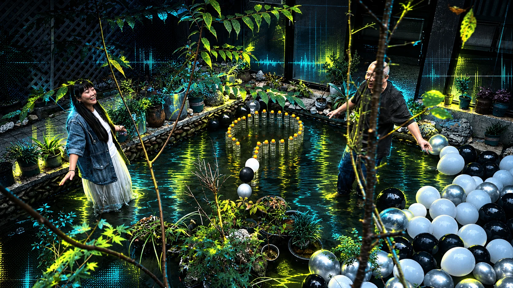

PERFORMANCE ART · GRATITUDE · TECHNO
OPEN Thank You.
22 位伙伴，中英文唱名。

生日快乐主题 × Techno · 中英文唱名138 BPM / 03:24 / 22 位伙伴
01
STEREO / FULL VERSIONOPEN Thank You闭幕聚餐音乐 / Closing dinner soundtrack
00:0003:24
点击播放。中英文姓名逐一演唱。
LIVE LYRICS / 同步字幕
OPEN，Thank you。
Thank you for being here.
欢迎 / WelcomeNAMES / 名单
全部名单
艺术家、策展人、摄影与工作团队。
点击姓名，跳转收听。
参展艺术家
PARTICIPATING ARTISTS策展人
CURATOR摄影摄像
PHOTOGRAPHY & VIDEOGRAPHY工作团队
FESTIVAL TEAM完整字幕 / FULL LYRICS ＋
DOWNLOADS
下载
音乐、字幕、工程。